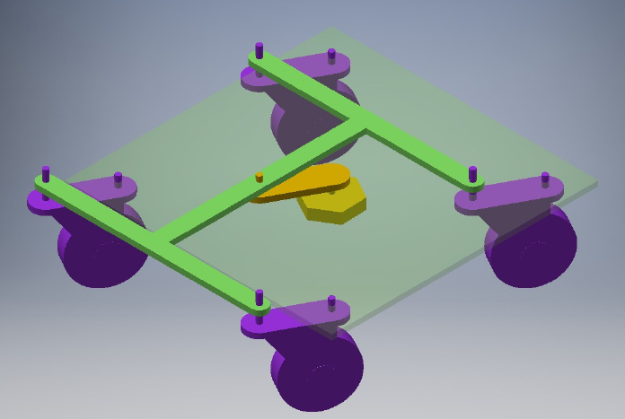

Design
動⼒系統
本文透過設計各個斷面的厚度以及扭角設計出完整的扇葉模型。 並且透過應力分析以及流體力學找尋最佳的扇葉設計
風扇設計
轉向系統
本文基於阿克曼轉向機構作概念研發出四軸同動機構，此方法能有省去阿克曼轉向機構複雜的計算以及確保車子軸向一直平行於循跡線以利後續循跡任務。
轉向系統
煞⾞系統
煞車系統利用釣魚線統一拉扯煞車皮的結構最輪子做煞車的動作。
煞⾞系統
車體系統
車體設計如附圖，為了增加風對於車輛平移的推力，在車輛的轉向系統上增加了一個舵片來引導風的流向

煞⾞系統
電路設計
因為雙向的BLDC電變較為昂貴，故本文利用單向的BLDC電變結合繼電器電路控制風扇轉向， 並透過切換繼電器的開關實現風扇反轉。

繼電器反向電路
本文的電路圖如下圖，總共有三的伺服馬達，包含兩個煞車用的馬達以及一個轉向用馬達。利用六個紅外線感測器連接在digital input。 同時加入一個L9110s來提升電壓以驅動繼電器電路。最後繼電器電路連接向BLDC，提供風動車動力。
風動車電路
控制系統
為了在前進與後退都能進行循跡任務，本文分別在車前與車後放置三個紅外線感測模組，藉此分辨循跡線與路面。
感測器安裝示意圖
控制程式可以分成兩種:
- 變換車道：變換車道透過旋轉車輪的角度使車輛可以斜向移動，並利用電子變速器控制移動速度；接著透過車輛前方的紅外線感測模組判斷車輛的區域分隔線， 決定是否啟動煞車系統停止車輛。
- 循跡移動：利用車輛前方的三個感測器判斷車輛相對於循跡線的位置，並做左右移動的控制，使車輛能順利的顏循跡線移動。 同時利用車輛前方的紅外線感車器判斷是否抵達區域分隔線來進行下一步動作。